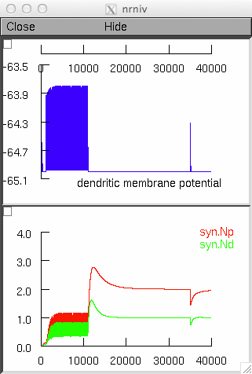

Model files in the NEURON simulation environment from the paper "Effect of the Initial Synaptic State on the Probability to Induce Long-Term Potentiation and Depression" by Michele Migliore, Giada De Simone, and Rosanna Migliore Biophysical Journal (2015), http://dx.doi.org/10.1016/j.bpj.2014.12.048 Usage: ------ Auto-launch from ModelDB or: Compile the mod files with mknrndll (mswin or graphical mac) or nrnivmodl (unix/linux)). Start the simulation by (unix/linux) typing on the command line: nrngui mosinit.hoc or (mac os x) drag and dropping the mosinit.hoc file on the nrngui icon or (mswin) double clicking on the mosinit.hoc file. The simulation starts by running fig1C.hoc. The file fig1C.hoc reproduces the simulations shown in Fig.1C of the paper. Example: clicking on run on the initial window should produce the following graph for TBS LTP:  Questions on how to use this model should be directed to rosanna.migliore@cnr.it